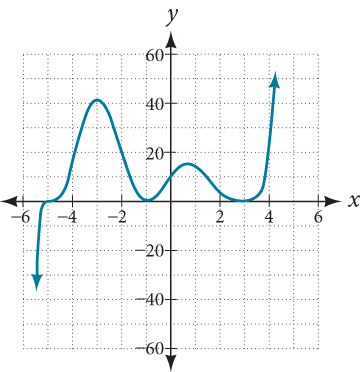
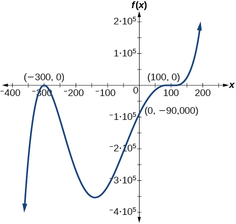

Section 5.3 - Graphs of Polynomial Functions¶
1. Find the \(y\)- and \(x\)-intercepts of the function \(f(x)=x^4−19x^2+30x\).¶
Solution:
This polynomial is not in factored form, has no common factors, and does not appear to be factorable using techniques previously discussed. Fortunately, we can use technology to find the intercepts. Keep in mind that some values make graphing difficult by hand. In these cases, we can take advantage of graphing utilities.
from IPython.core.display import display, HTML
display(HTML('<h1><iframe src="https://www.desmos.com/calculator/9tvgvknksa?embed" width="500px" height="500px" style="border: 1px solid #ccc" frameborder=0></iframe></h1>'))
From the graph, the \(x\) intercepts are: \((-5, 0, 2, 3)\), and the \(y\)-intercept is \(0\).
In factored form, the polynomial can be expressed as:
\(f(x) = x(x+5)(x-2)(x-3)\)
2. Writing a formula for a polynomial function of degree \(9\) from the Graph.¶
Solution
The polynomial function is of degree \(9\). The sum of the multiplicities must be \(9\).
Starting from the left, the first \(zero\) occurs at \(x=−5\). The graph crosses the \(x\)-axis, so the multiplicity of the \(zero\) must be odd. The \(zero\) of \(−5\) most likely has multiplicity \(3\).
The next \(zero\) occurs at \(x=−1\). The graph touches \(x-\)axis at this point. The multiplicity of the \(zero\) must be even, which is likely to be \(2\).
The last \(zero\) occurs at \(x=3\). The graph again touches the \(x\)-axis, so the multiplicity of the \(zero\) must be even. However, the graph at \(x=3\) is flatter than at \(x=-1\). Hence, we know that the multiplicity is likely even and more than \(2\). It is likely to be \(4\).
Total multiplicity \( = (3+2+4) = 9\).
\(f(x) = (x+5)^3(x+1)^2(x-3)^4\)
3. Sketch the graph of \(f(x) = \dfrac{1}{4}x(x-1)^4(x+3)^3\)¶
Solution
\(f(x)\) has three \(x\) intercepts at \(0, 1,\) and \(-3\).
At \(x=0\), the multiplicity is \(1\), which means the graph will be linear at the origin \((0,0)\).
At \(x=1\), the multiplicity is \(4\), which means the graph will bounce at this point.
At \(x=-3\), the multiplicity is \(3\), which means the graph will cross the \(x\)-axis at this intercept.
Now, at \(x=0\), \(f(x)=0\), which means the \(y\)-intercept of the graph is \(0\).
display(HTML('<h1><iframe src="https://www.desmos.com/calculator/3mxv3hwjl6?embed" width="500px" height="500px" style="border: 1px solid #ccc" frameborder=0></iframe></h1>'))
4. Find intercepts and multiplicities of the following functions:¶
\( \text{(a) } f(x) = x(4x^2-12x+9)(x^2+8x+16) \\ \text{(b) } f(x) = 3x^4 + 6x^3 + 3x^2 \\ \text{(c) } f(x) = 2x^4(x^3 - 4x^2 + 4x) \)
Solution
(a)
\( \begin{align} f(x) &= x(4x^2-12x+9)(x^2+8x+16) \\ &= x(2x-3)^2(x+4)^2 \end{align} \)
\(x\) intercepts: \(-4, 0, \dfrac{3}{2}\)
Multiplicities: \(1, 2\).
(b)
\( \begin{align} f(x) &= 3x^4 + 6x^3 + 3x^2 \\ &= 3x^2(x^2+2x+1) \\ &= 3x^2(x+1)^2 \end{align} \)
\(x\) intercepts: \(-1, 0\)
Multiplicities: \(1, 2\).
(c)
\( \begin{align} f(x) &= 2x^4(x^3 - 4x^2 + 4x) \\ &= 2x^5(x^2 - 4x + 4) \\ &= 2x^5(x - 2)^2 \end{align} \)
\(x\) intercepts: \(0, 2\)
Multiplicities: \(1, 2\).
5. Find \(f(x)\). Given, double zero at \(x=−3\) and triple zero at \(x=0\). Passes through the point \((1,32)\).¶
Solution
\( f(x) = a(x+3)^2x^3 \)
Let’s find the stretch factor \(a\),
\( f(x=1) = 32 \\ 32 = a(1+3)^2(1)^3 \\ a = 2 \)
\(f(x) = 2(x+3)^2x^3\)
6. Find \(f(x)\). Given, degree \(5\). roots of multiplicity \(2\) at \(x=−3\) and \(x=2\) and a root of multiplicity \(1\) at \(x=−2\). \(y\)-intercept at \((0, 4).\)¶
Solution
\( f(x) = a(x+3)^2(x-2)^2(x+2) \)
Given, \(f(x) = 4\) at \(x=0\).
\( 4 = a(3)^2(-2)^2(2) \\ \therefore a = \dfrac{1}{18} \)
\(f(x) = \dfrac{1}{18}(x+3)^2(x-2)^2(x+2)\)
7. Use the graphs to write a polynomial function of least degree.¶
Solution
\( f(x) = a (x+300)^2 (x-300)^3 \)
At \(x = 0\), \(f(x) = -90000\)
\( -90000 = a (300)^2 (-300)^3 \\ a = \dfrac{1}{300^3} \)
\(f(x) = \dfrac{1}{300^3} (x+300)^2 (x-300)^3\)